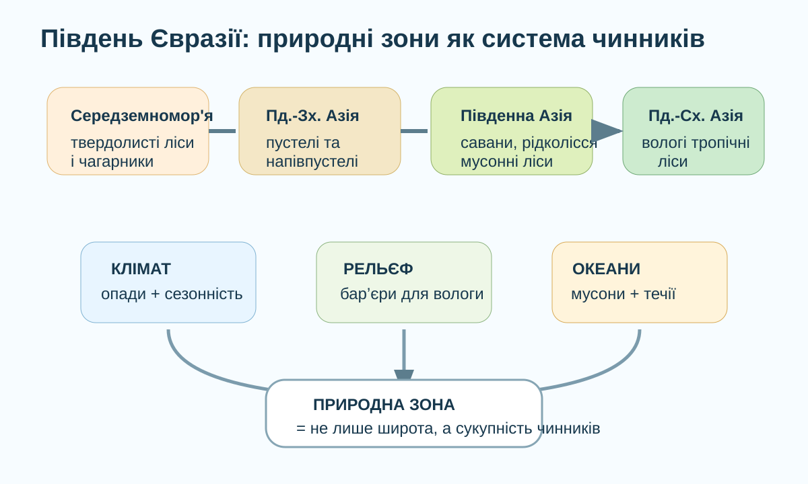

1. Гіпотеза — 3 хв
Теза: на півдні Євразії природні зони змінюються переважно через широту.
2. Маршрут уздовж півдня материка — 5 хв

Уявіть маршрут: Іспанія → Аравійський півострів → Індія → південь Китаю → Індонезія. Запишіть, чому природа змінюється не просто «з заходу на схід», а стрибками.
3. Доказ 1: Середземномор'я — 5 хв
Кліматична логіка
Літо спекотне й сухе, зима м'якша та вологіша. Рослини повинні витримувати дефіцит води саме в теплий сезон.
Завдання. Які ознаки листка допомагають вижити? Оберіть дві й поясніть механізм: жорсткий листок, товста кутикула, великі ніжні листки, глибока коренева система.
Перевірка супутником
Відкрийте NASA Worldview і знайдіть Іберійський півострів та Середземноморське узбережжя. Порівняйте зелень узбережжя й сухіші внутрішні райони.
NASA Worldview ↗Не робіть висновок лише за кольором: супутниковий знімок показує стан поверхні в конкретний момент, а природна зона — довготривалу систему.
4. Доказ 2: Аравія та Іран — 5 хв
Чому на близьких широтах до Південної Азії тут величезні пустелі? Розкладіть причину на ланцюг.
5. Доказ 3: Індія та Південно-Східна Азія — 5 хв
Мусон як перемикач
Улітку суходіл нагрівається швидше за океан, формується потік вологого повітря з океану на материк. Узимку напрям слабшає або змінюється.
Питання. Чому західні схили Західних Гатів і південні схили Гімалаїв отримують більше опадів, ніж райони за горами?
Copernicus Land
Відкрийте Copernicus Land Monitoring Service і порівняйте південь Індії, Індокитай та Аравію за земним покривом.
Copernicus Land ↗Пастка. Ліс ≠ автоматично «вологий тропічний ліс». Потрібні клімат, сезонність, ґрунти та географічне положення.
6. Порівняйте зони — 4 хв
Сухе літо, волога зима; жорстколисті рослини.
Дуже мало опадів; розріджена ксерофітна рослинність.
Вологий літній сезон, виразна сезонність.
Тепло й багато опадів більшу частину року.
Завдання. Визначте, яка пара зон найкраще доводить, що однакова або близька широта не гарантує однакової природи. Обґрунтуйте двома чинниками.
7. Коротке відео — 2 хв
Після перегляду
Назвіть один приклад, де рельєф змінює природну зональність на півдні Євразії.
8. Теорія після дослідження — 3 хв
Головна ідея: природні зони південної Євразії формуються не одним чинником. Широта задає тепловий фон, але реальний природний комплекс визначають також опади, їх сезонність, мусони, віддаленість від океану та гірські бар'єри.
- Середземномор'я: твердолисті вічнозелені ліси й чагарники пристосовані до сухого літа.
- Південно-Західна Азія: великі площі пустель і напівпустель через дефіцит вологи.
- Південна та Південно-Східна Азія: мусонні та вологі тропічні ліси завдяки теплому клімату й значній кількості опадів.
- Гори: переривають широтну зональність і створюють висотну поясність.
9. CER — 3 хв
Claim: «Природні зони півдня Євразії не можна пояснити тільки широтою».
10. Домашнє завдання
Опрацюйте §57. Створіть мінітаблицю для чотирьох територій: Середземномор'я, Аравійський півострів, Індія, Індонезія. Для кожної: природна зона → режим опадів → головний чинник → одна адаптація рослин.
Електронний підручник ↗11. Тест — 10 балів
Спочатку введіть дані. Тест відкриється лише після заповнення всіх полів.